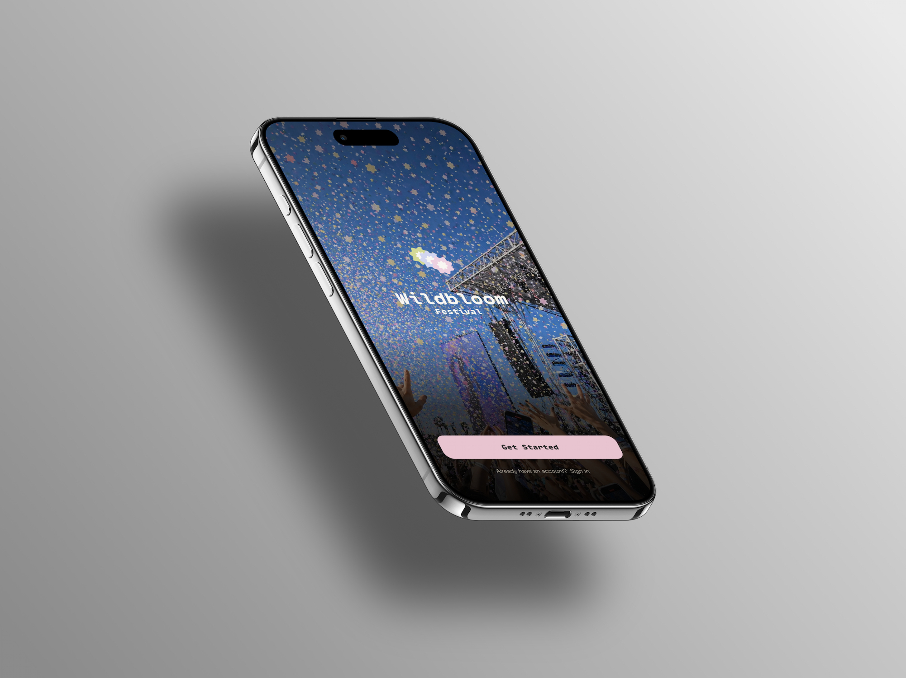

Wildbloom Music Festival App and Admin Tool
Project Summary
A dual-platform UX case study for a music festival companion app and staff admin tool, designed to reduce publishing bottlenecks and help attendees plan faster.
Role: Designer and Developer · Year: 2026

Overview
Wildbloom is a festival experience designed for both sides of the stage: attendees who need reliable event information, and staff who need a faster way to publish updates.
The work includes a mobile-first companion app for lineup, map, tickets, and planning, alongside a desktop admin tool for managing events, acts, vendors, and publishing workflows.
Problem
The event team had a slow publishing pipeline where one photo or content update could take days to move through the right people. Festival-goers, meanwhile, were screenshotting schedules and guessing because information was scattered or hard to trust on-site.
The problem was not only visual design. It was operational: too many handoffs stood between new information and the people who needed it.
Goals
The attendee app needed to make planning feel immediate and resilient, especially when cell service was unreliable. The admin tool needed to help staff move from event creation to publish without engineering support.
The shared goal was to reduce the number of hands a piece of information had to pass through before it reached the public experience.
Process
I synthesized stakeholder notes into three guiding principles: keep live information close to the surface, make publishing paths explicit, and design the attendee and admin sides as one connected system.
The information architecture maps the attendee app around browsing live content: home, lineup, map, and plan. The admin tool maps around manageable entities: events, acts, vendors, and publish states.
Solution
The final attendee app brings lineup, tickets, and event information into one mobile-first experience. The admin dashboard gives the event team a desktop-first workspace where content can be edited, cross-linked, and published independently.
Together, the two surfaces create a tighter loop between staff updates and attendee decisions.